Mulberry Trees
{kind=link}
Introduction
| 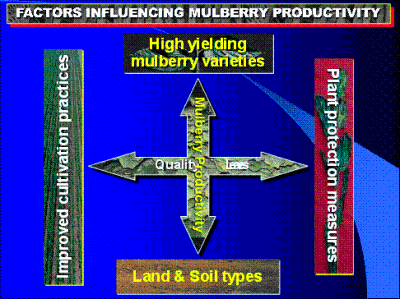 |
| Mulberry Productivity Chart |
| (c) National Sericulture station
|
Soil and Climatic Requirement
Mulberry Varieties
| 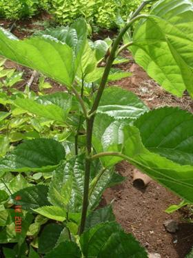 |
| Morus Alba Ex-Mbu |
| (c) National Sericulture station
|
|
Morus Alba - Ex-mbu variety is characterized by short internodes; purplish coloured bark prominent at the shoot tips.The variety has many small leaves and is drought resistant.This variety is more susceptible to leaf spot than other varieities but can be controlled by timely harvesting of leaf. |
| 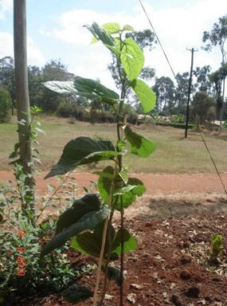 |
| Morus Alba Ex-Thika |
| (c) National Sericulture station
|
|
Morus Alba - Ex-Thika is characteriyed by large light green slightly drooping leaves, has long internodes and whitish bark. It is fairly drought tolerant. The young shoot is weak and may need support to avoid falling or bending.
|
| 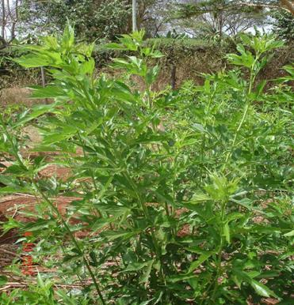 |
| Morus Alba - Ex LimuruMorus Alba - Ex Limuru |
| (c) National Sericulture station
|
|
Alba - Ex Limuru is characterized by small finger shaped deeply serrated leaves, very thin shoots with short internodes. It is a high berry producer and is thus not recommended for silkworm rearing due to low leaf harvest but recommended for berry production. |
| 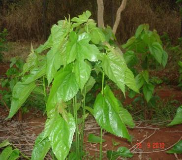 |
| Morus Alba Ex-Ithanga |
| (c) National Sericulture station
|
|
Morus alba Ex-Ithanga is characterized by medium heart shaped and smooth light green leaves. It may sometimes produce a few lobed leaves. It roots easily and is fairly drought tolerant. It is suitable for both silkworm rearing and berry production. |
 |
| Morus indica - var kanva - ex - India |
| (c) National Sericulture station
|
|
Morcus indica - var kanva - ex-India is characterized by medium lobed glittering leaves. The stem has short internodes with a lot of leaves. It is a heavy berry producer and is recommended for both silkworm rearing and berry production. It roots easily and grows fast. |
| 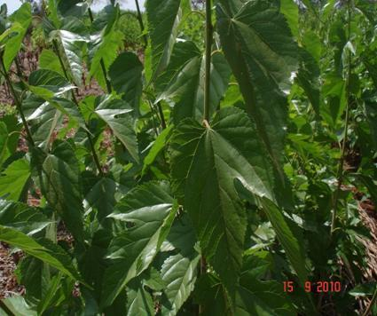 |
| Noi Ex-Thailand |
| (c) National Sericulture station
|
|
Noi Ex-Thailand It has medium heart shaped dark green glittering with golden top leaves. It has short internodes with a plenty of leaves. It roots easily and is a very promising variety still under observation. It does well under irrigation. |
Mulberry Propagation and Planting
Propagation
Mulberry is mainly propogated vegetatively by cutting, layering or grafting. Propagation by cuttings has been found to be the best method and is the current practice recommended for this purpose. Propagation by seed is only used in breeding work.
Land Preparation
Land should be prepared by deeply ploughing up to a depth of 30-40 cm in order to loosen the soil. This activity should be done before the rains. Perennial weeds like couch grass and rhizomes should be removed. On steep land, over 30% slope terraces should be constructed preferably as a single row.
Mulberry Orchard Establishment
There are two methods of mulberry orchard establishment:
(1) Direct Planting
Under this method, mulberry cuttings are planted directly on the main farm. Without enough moisture a farmer is at risk of losing a large number of the cuttings. Direct planting should only be done when there is enough rainfall or under irrigation.
(2) Saplings
Nursery Establishment:
Depending on the type of soils and amount of rainfall in an area, prepare seedbed 21/2 months before onset of rains. This can be raised or sunken nursery depending on the soil drainage properties. The width of the nursery is 4ft (1.2m) and any convenient length. Mix half (1/2) a debe of well decomposed farmyard manure in ever 3ft2 (1m2).
Preparation of Cuttings:
Should be taken from mature shoots, 6-8 months old of about 1.5cm in diameter, mostly the grey part of the shoot leaving the young green top of the shoot. To obtain a good cutting, use a sharp pair of secateurs to make a cut slightly slanting away from the bud at the top (10% slant). The lower part is cut at 45% slant to facilitate pushing it into the soil. The length of the cutting should be 6 inches (15cm) long with 3-4 buds.
While preparing cutting care should be taken not to damage the bark or split the wood as the leaves open wounds that can lead to infection that lowers germination percentage.
Planting and Spacing:
The full length of the cutting is pushed into the soil, leaving only one bud above the soil level. Cuttings in the nursery are placed 6 inches x 6 inches (15 cm x 15 cm). Watering should be done regularly in order to keep the soil moist. This enhances faster root development.
Below is an illustration of how to plant:
| 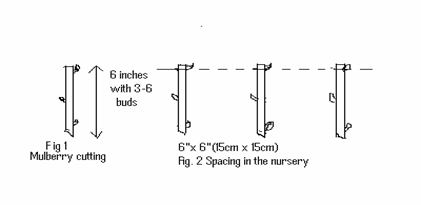 |
| Planting of Cuttings |
| (c) National Sericulture station
|
Several shoots will sprout from one cutting but only one should be allowed to grow. Therefore all other shoots are cut off. Weeds are removed when noticed to reduce competition for food and moisture.
| 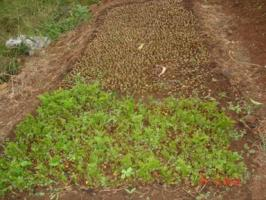 |
| Newly Established Nursery |
| (c) National Sericulture station
|
| 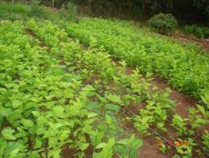 |
| Well Established Nursery |
| (c) National Sericulture station
|
| 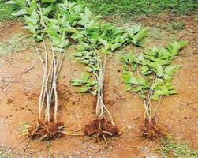 |
| Uprooted Saplings |
| (c) National Sericulture station
|
This is the transfer of saplings from the nursery to the main field. Saplings which are about 80-90 days old can be transplanted. While uprooting maximum care should be taken not to damage the root system. Before uprooting, the nursery should be well watered.
Transplanting is done early in the morning, late in the evening or anytime during the day when the weather is cool. The shoots should be trimmed to reduce loss of water by transpiration while the roots should be trimmed to avoid wilting of the sapling from bent roots.
Spacing of Mulberry Plantation:
There are several spacing practices that have been adopted but mostly determined by the intended use, irrigated or rain-fed plantation. 5ft x 21/2 (1.5m x 0.75m) for rain-fed mulberry and 4ft x 21/2 (1.2 x 0.75) for irrigated mulberry. This will give a population of 4,000 trees per acre.
Digging of Holes:
The size of the planting hole should be 11/2ft x 11/2ft (45 x 45 cm).
Separate topsoil from subsoil and mix the topsoil with half (1/2) a debe of well decomposed farmyard manure then put it back into the hole. The soil level should be retained at least 10 cm below ground level to form a basin like structure.
At the onset of the rains, pull out the saplings and trim the roots and cut off the shoot to avoid loss of water by transpiration. Plant the sapling in the basin formed.
When the shoots sprout more soil is added to the soil to encourage the formation of secondary roots. If all uprooted saplings are not planted on that day, store the remaining ones in a damp place. One can dig a hole and place them inside or place them under shade and cover them with grass. Sprinkle water over them to keep them damp.
Inter-cropping:
Legumes can be planted between the mulberry rows, using the standard cultivation. However climbers or any other legume that requires spraying of chemicals that are harmful to the silkworms should not be intercropped. Inter-cropping with legumes can be done within the first year while the crop is young which leads to additional nitrogen to the garden and income in the first year.
Training of Mulberry Tree for Maximum Leaf Production:
Three months after the mulberry has been established in the main field, prune the shoots at the base level. This will allow more shoots to grow from the base.
After about 6 months, when these shoots attain a height of 3ft select 3 strong shoots. Prune at 1ft above the ground to establish the pruning/harvesting table.
| 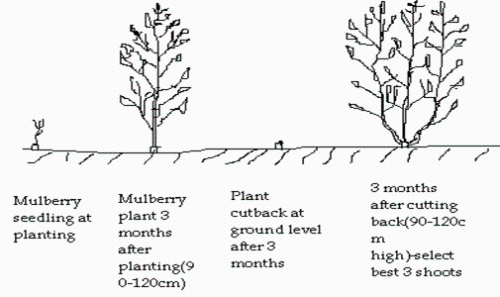 |
| Training of Mulberry |
| (c) National Sericulture station
|
| 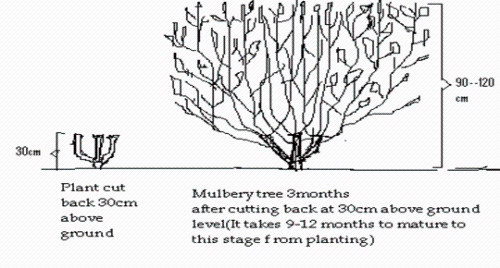 |
| Pruned Tree Showing Fist |
| (c) National Sericulture station
|
Harvesting/Pruning:
Harvesting starts 9 months after transplanting from the nursery. Each plant produces an average of 1kg of leaves in the first season. On attaining maturity in the 3rd year, the tree should give 2kg per tree giving a total yield of 20m/tons/ha/season of mulberry leaf. Depending on the rainfall pattern, 3-5 crops can be realized in a year.
| 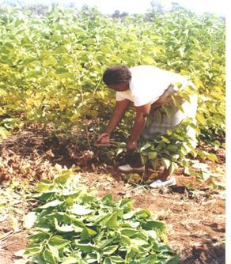 |
| Harvesting Shoots |
| (c) National Sericulture station
|
| 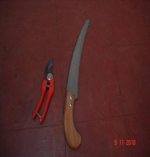 |
| Secateurs and Pruning Saw |
| (c) National Sericulture station
|
Methods of Harvesting:
The most used methods of harvesting are:
(i) Leaf Plucking - individual leaves are harvested from the stem. When this method is used the remaining shoot is later harvested for the older silkworms ensuring that the tree is well pruned after each rearing.
(ii) Shoot Harvesting - shoots with leaves are pruned at the harvesting table (30cm from the ground).
Avoid harvesting yellow, over mature and diseased leaves for they have less moisture and low nutritive value.
(i) Harvesting should be done in the mid morning and stored in the leaf chamber. The leaves should be covered to preserve freshness of leaves.
| 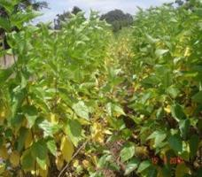 |
| Over Mature and Yellowed Shoots |
| (c) National Sericulture station
|
| 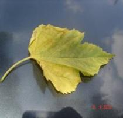 |
| Yellow Leaf |
| (c) National Sericulture station
|
| 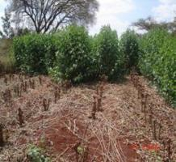 |
| Mulberry Garden Under Harvesting |
| (c) National Sericulture station
|
| 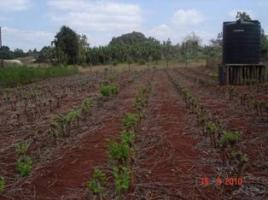 |
| Fully Harvested and Pruned Mulberry Garden |
| (c) National Sericulture station
|
| 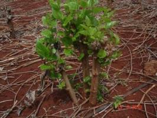 |
| A Sprouting Mulberry Stump |
| (c) National Sericulture station
|
Mulberry Diseases
The most common diseases of mulberry are:
(i) Septoria Leaf Spot:Cercospora moricola
Symptoms:
The diseased leaves have a number of circular irregular dark brown spots of various siyes with clear boundaries and white centers. Occassionally the spots enlarge to cover the whole leaf below. Usually the incidence is more during rainy seasons.
Under field conditions older leaves have been found to be more susceptible.
The infected leaves are not suitable for feeding the silkworms.
| 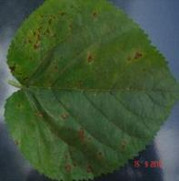 |
| Mulberry Leaf Spot |
| (c) National Sericulture station
|
| 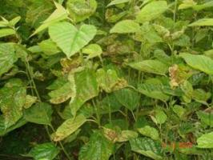 |
| Garden Heavily Infested with Leaf Spot |
| (c) National Sericulture station
|
Control:
Leaf for feeding silkworm should be harvested at the recommended period to avoid leaf spot attack as this disease is prevalent on old and over mature leaves. Proper cultural practices like weeding out the alternate hosts, removing the affected leaves, and infected leaves should be removed and burnt.
(ii) Powdery Mildew:
This is caused by the pathogen Phyllactinia corylea.
Powdery mildew is prevalent during the cold months and under humid conditions in the tropical regions.
Symptoms:
Grey powder appears as whitish patches and quickly covers the entire surface of the leaves. It is found on the underside of the leaves. The diseased leaves are not suitable for feeding silkworms.
| 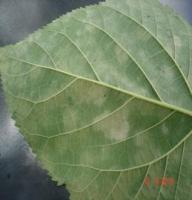 |
| Mulberry Powdery Mildew |
| (c) National Sericulture station
|
Control:
Maintain proper spacing and timely harvesting. The affected leaves should be picked and destroyed.
Mulberry Pests
Thrips (Pseudodendrothrips mori Thysanoptera: Thripidae) infested Shoot
Nymphs and adults of thrips lacerate the epidermal leaf tissues and suck the oozing cell sap leading to damage of guard cells and finally drying of leaves. Affected leaves show streaks in the early stages and blotches in the advanced stage of the attack.
| 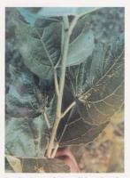 |
| Thrips (Pseudodendro thrips mori Thysanoptera: Thripidae) Infested Shoot |
| (c) National Sericulture station
|
Jassid Emposcafa Flavescens F.(Homoptera: Cicadellidae) infested Leaf
Type of Damage and Symptoms:
The most prominent symptom is characteristic 'hopper burn' yellowing of leaves all along the leaf margin and reduces the plant vitality and yield. In the final stages of the attack the leaf becomes cup shaped and withers off prematurely.
Mulberry, like most of the economic plantations and field crops, is also subject to the attack of a vast pest complex belonging to a large number of insects.
| 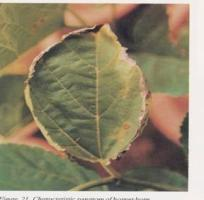 |
| Jassid Empoasca flavescens F. (Homoptera: Cicadellidae) Infested Leaf |
| (c) National Sericulture station
|
Cutworm, Spodoptera litura (F.) (Lepidoptera: Noctuidae)
Type of Damage and Symptoms:
The caterpillars attack the shoots of young plants and cut them. The cut portion of the shoot dries up and falls down. They also feed on leaves. Newly sprouted mulberry garden or the garden having young plants are found without branches having dried leaves.
Control:
(1) Deep ploughing of the mulberry garden exposes the different stages of pest which can be picked up and killed.
(2) Deep digging around the mulberry plants after pruning exposes cutworms that are close to the plant.
| 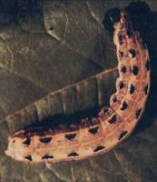 |
| Cutworm, Spodoptera litura (F.) (Lepidoptera: Noctuidae) |
| (c) National Sericulture Station
|
Black Scale Insect (Saissetia spp)
| 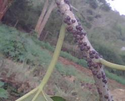 |
| Black Scale Insect (Saissetia spp) |
| (c) National Sericulture station
|
Management:
- Physical: Swapping with a blunt edge wooden plate to dislodge the insect.
- Chemical: Spraying of 0.05% Dimethoate. Safe period: 10 days. (Warning: This may kill the silk worms, if not carefully handled).
- Biological: Use of predators, such as the green lacewing, and parasitic encirtid wasps.
Spiraling White Fly, Aleurodicus dispersus (Russel) (Homoptera: Aleyrodidae)
Type of Damage and Symptoms:
Infest the lower surface of leaves resulting in chlorosis, yellowing, upward curling of the leaves, leaf fall and retardation of growth. The nymphs and adults remain on the lower surface of the leaves and the plants.
| 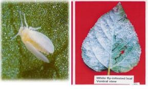 |
| Spiraling White Fly, Aleurodicus dispersus (Russel) (Homoptera: Aleyrodidae) |
| (c) National Sericulture station
|
Other Pests
(1) Moles
Moles can be very destructive to Mulberry and can wipe out a whole garden.
Control:
- Trapping - preferable
- Rodenticide (mole kill) - only if not organic
| 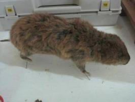 |
| Mole |
| (c) National Sericulture station
|
(2) Wild animals (Antelopes)
(3) Domestic animals (goat and sheep)
(4) Human beings also use mulberry as food
Control:
Fence off the Mulberry garden to keep away both domestic and wild animals.
Information Source Links
- Central Silk Board (2003) Seri Business Manual; Users Guide.
- Dr. K. Kawakami (JICA) and Dr. H. Yanagawa (JICA) (2003). Illustrated Handbook on Silkworm Disease Control Technology.
- Dr. M. N. Narasimhanna (1988) Manual on Sericulture Egg Production.
- Dr. Manjeet S. Jolly (1987). Appropriate Sericulture Techniques
- FAO Bulletin (1991) Silkworm diseases.
- FAO Bulletins (1987) Manuals on Sericulture.
- Jica. Third country training Programme (2010) Bivoltine Sericulture Technology
- National Sericulture Station (2008). Manual guide to Sericulture practices in Kenya.
Authors Contact Addresses
- Rosemary K. Nyamu Tel. 0718987376 Email: rosemarymwololo@yahoo.com
- Joyce N. Wainaina Tel. 0721523565 Email: joycewainaina@yahoo.com
- James A. Onyango Tel. 0723205168 Email: awegaja@yahoo.com
- National Sericulture station Tel. 0202023117 Email: serithi@yahoo.com